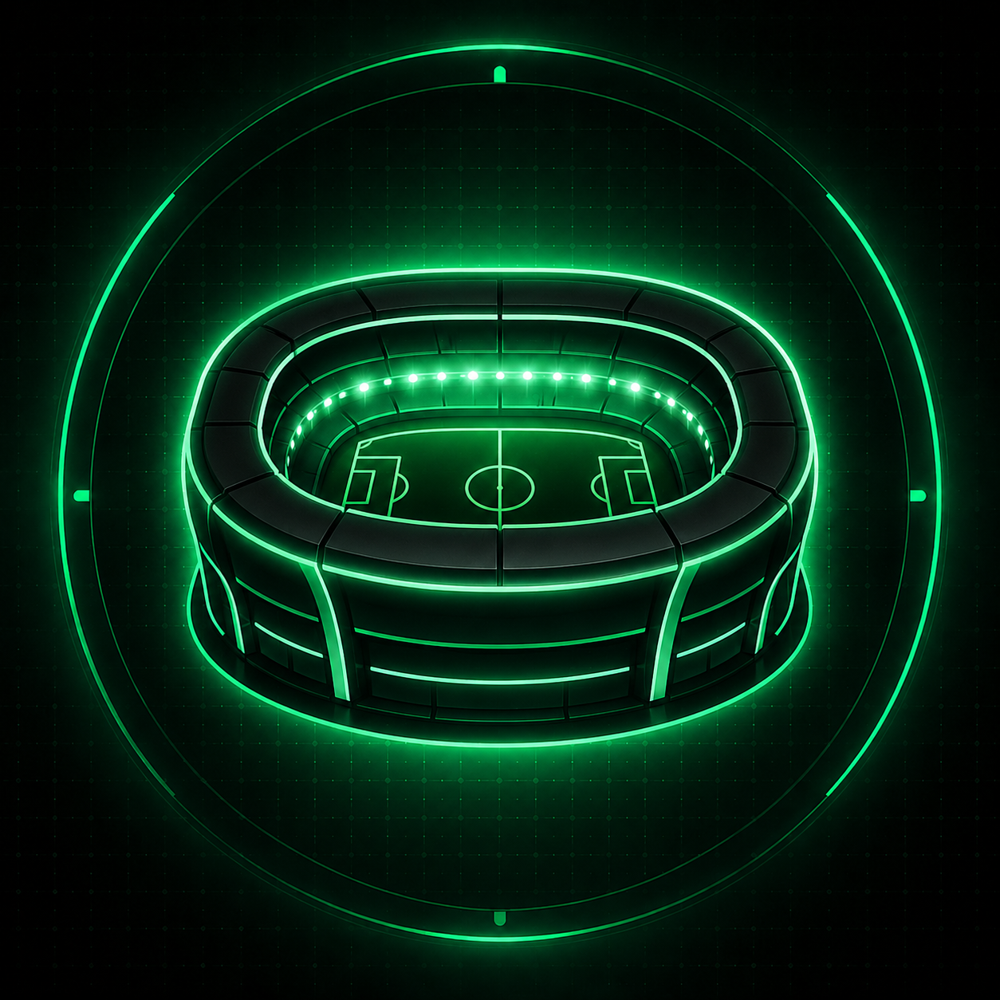
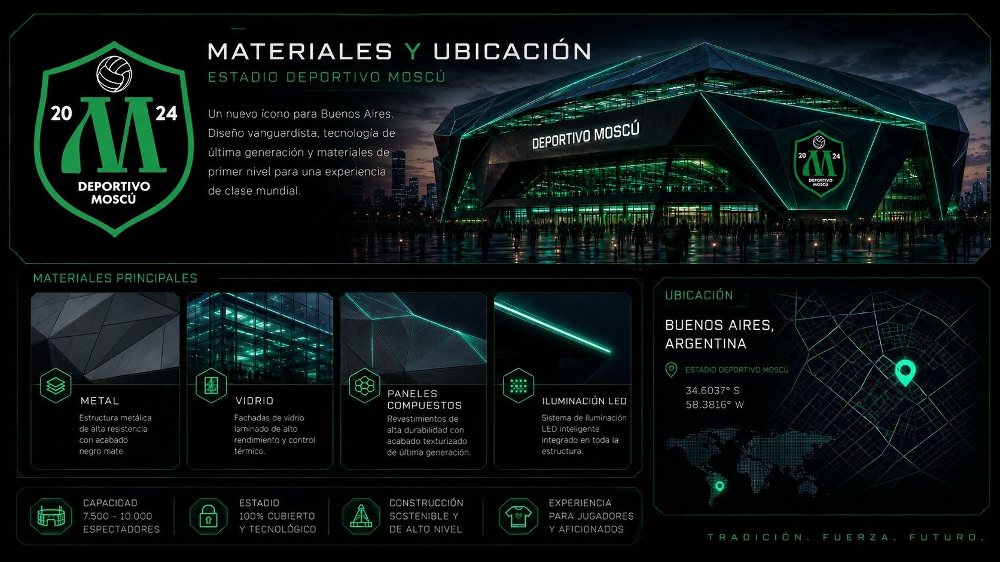
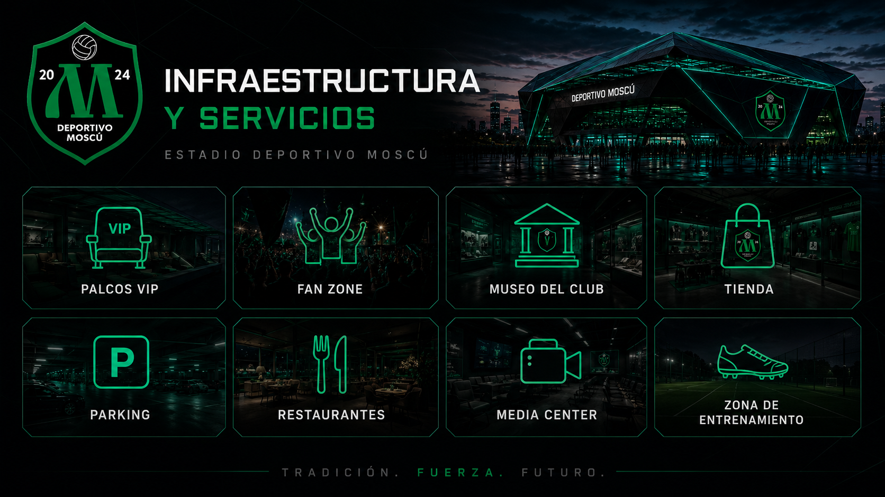

Архитектурный план
Вид сверху
Компактная закрытая футбольная арена с зелёно-чёрной идентичностью, современной крышей и трибунами близко к полю.
Новый дом Deportivo Moscu в Буэнос-Айресе: закрытый современный стадион на 7 500–10 000 зрителей, без беговой дорожки, с трибунами максимально близко к полю и атмосферой настоящего футбольного дома.

Компактная закрытая футбольная арена с зелёно-чёрной идентичностью, современной крышей и трибунами близко к полю.

Плотные трибуны, флаги клуба, мощный шум болельщиков и зелёно-чёрная атмосфера Deportivo Moscu.
Футуристичная архитектура, стекло, металл, LED-подсветка и большая эмблема клуба на фасаде.

Современные материалы, тёмная премиальная отделка, зелёные световые линии и технологичный стиль.

VIP-ложи, фан-зона, музей клуба, магазин, рестораны, парковка, медиацентр и зона тренировок.
Стадион проектируется как новый символ клуба: компактный, закрытый, эмоциональный и современный. Главная идея — создать арену, где болельщик находится максимально близко к игре, а команда чувствует поддержку каждой трибуны.
Вместимость 7 500–10 000 зрителей, отсутствие беговой дорожки, закрытая конструкция, современное освещение, медиа-зоны, магазин клуба, фан-зона, музей и коммерческие помещения.
Трибуны близко к полю, без беговой дорожки, с плотной атмосферой матча.
Премиальные ложи, зона партнёров, коммерческие места и клубный лаунж.
Форма, шарфы, коллекции Deportivo Moscu и официальная атрибутика.
Пресс-зона, место для интервью, контента, трансляций и клубных медиа.
Фудкорт, кафе, зоны отдыха и питание для болельщиков в день матча.
Площадь перед стадионом для болельщиков, мероприятий и клубных активаций.
Этот раздел будет развиваться: сюда можно будет добавить текст проекта, этапы строительства, новые фотографии, схемы, презентацию для партнёров и коммерческие предложения.
Вернуться на главную